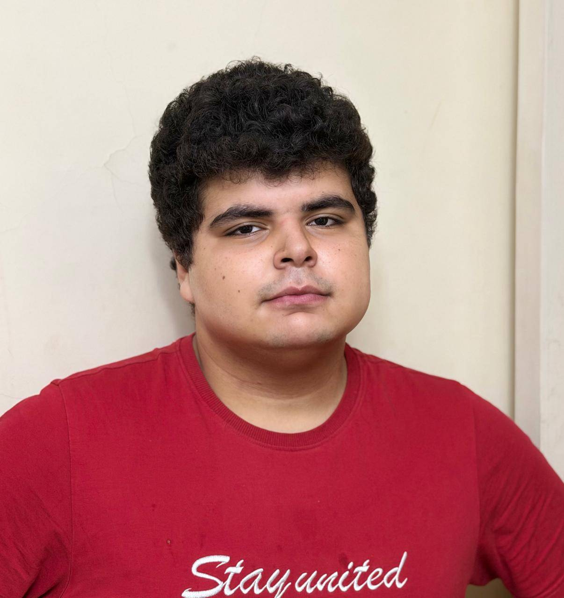
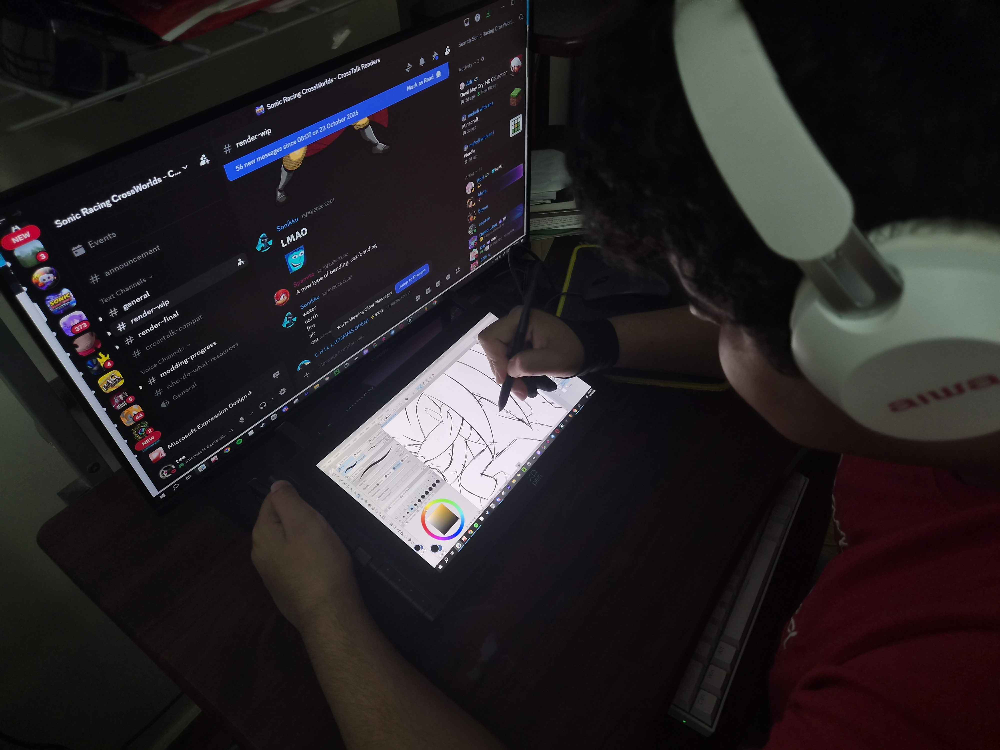
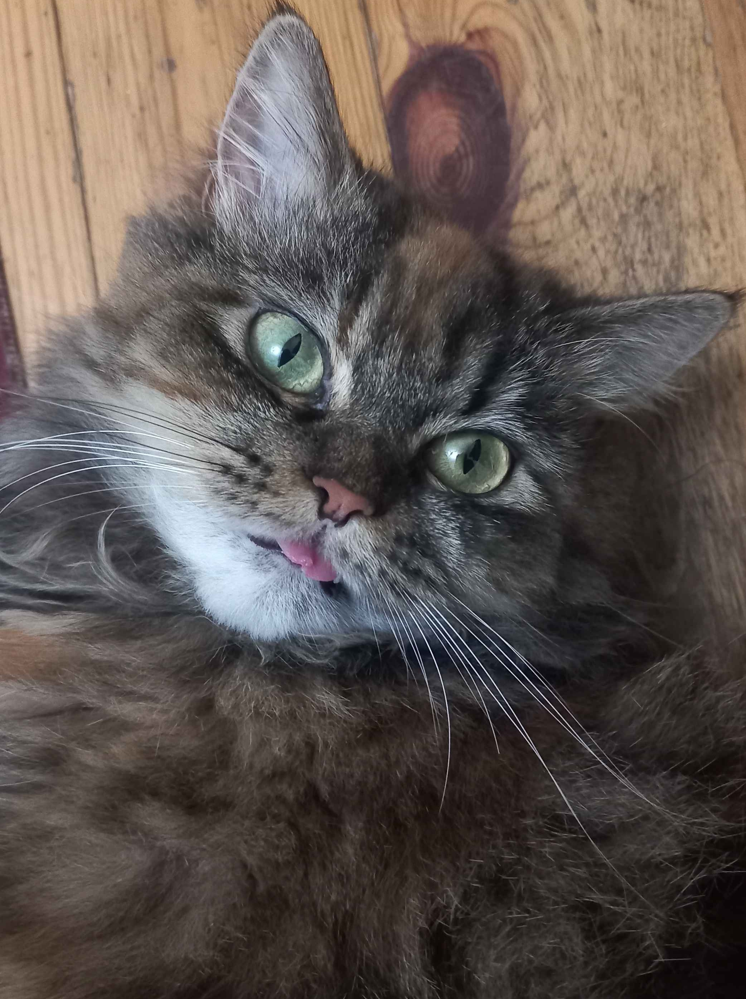
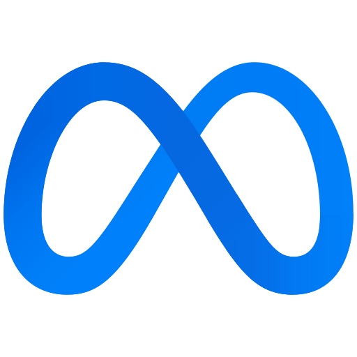

Hello, I'm Seif
Welcome to my About Me page. If you're here, that means you've scanned my NFC tag and landed on my personal page.
This page was designed with love by my big brother to help me introduce myself to you better and to give you more information about me and my disorder.
You can learn more about my disorder here and what it means for you and how you can deal with me. I promise it's not a lot
P.S. Please don't mind my photo on the right. I know I look dead inside, but I promise I'm very happy to meet you.

About Me
My name is Seif Ehab Aboul Sheour. I am years old and a current student of Pharos University in Alexandria (PUA) in the Faculty of Fine Arts and Design. I'm hoping to become a successful artist in the future, which is why I chose the "Design" faculty as my major.
I'm an avid artist, and I love to create new art pieces in my free time. I have been drawing for several years now, and have even started drawing digitally as a freelance job by taking on commissions from various clients and drawing their requets.
I'm also interested in gaming, especially retro games. I enjoy playing classic games from the past and collecting retro consoles. Ask me about anything related to a retro console and I might know it! Stuff like the Sega Genesis, Nintendo 64, Sega Saturn. I really do love them.
I love watching cartoons and anime too. My favorite is Dragon Ball Z / Super. I'm also a big fan of Sonic The Hedgehog. I know he's a video game character and not a cartoon character but...same difference. I've actually based all my drawings and artwork around the Sonic series!

Here's a photo of me working on a commission someone requested! I do this almost every day!
My Disorder
I suffer from a disorder known as Tourette's Syndrome. Tourette's Syndrome is a motor disorder that begins in childhood or adolescence. It is characterized by multiple movement and vocal tics. Common tics are blinking, coughing, throat clearing, sniffing, and facial movements. Tourette's is at the more severe end of the spectrum of tic disorders.
On a daily basis, I experience these tics, which can be unpredictable and sometimes embarassing, but I try my best to live with them. Some of my tics include shaking my head, blinking a lot, coughing, and saying words that I don't mean to say. Some of those words are inappropriate, but I never mean any of them.
Because of this, I asked my brother to help make this website to give you a bit more info about myself, and to help you understand my condition better. You can even consider this as a sort of way to introduce myself to you and others and to make it accessible by just sharing it via my NFC tag.
My disorder is not something I can control, but I am learning to live with it and not let it define me. So I hope you understand. If I performed a tic in front of you that made you uncomfortable, I apologize, and I hope you know I don't mean you any harm. And if you have any questions, please ask them.
You can actually learn more about Tourette's Syndrome here if you want to know more about it.
Frequently Asked Questions
Just in case you're wondering, here are some common questions about myself and my condition.
Yes, I do! I have a cat named Kuki. We've had her for a few years and ever since then she's been nothing but trouble, but I love her dearly.
I sometimes wake up to her sleeping on my computer chair, and I never have the heart to wake her up. Here's what she looks like! She's so cute!

Contact Info
In case you want to get in touch with me, here's my contact information.
